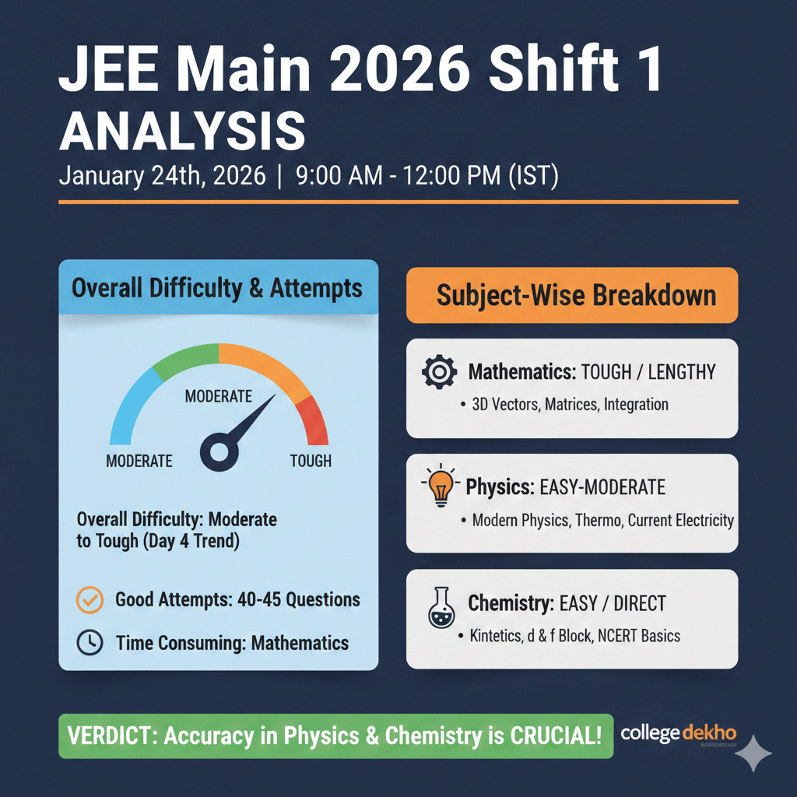

- We’re on your favourite socials!

Updated By Sohini Bhattacharya on 07 Apr, 2026 09:02
JEE Main paper analysis for Session 1, being held from January 21 to 29, will be available here for both Shift 1 and Shift 2. Get important insights into JEE Mains 2026 exam analysis, difficulty level, chapter-wise weightage and compare the varying trends from previous years.
Tell us your JEE Main score & access the list of colleges you may qualify for!
Predict My CollegeThe JEE Main 2026 Session 2 Exam is ongoing from April 2 to 9, 2026. The Shift 1 exam of Day 4 has ended at 12 noon. The overall exM=am difficukty levek was moderate, according to students' review. The Mathematics section seemed lengthy, and the Chemistry paper was moderate. Physics, on the other hand, was comparatively easier. The paper analysis of the entire session, as well as shift-wise difficulty, will be discussed here, after the exam concludes for each shift. The subject-wise breakdown, important topics, and weightage of each section will be available here to offer an in-depth analysis of the entrance test. The insights will be based on students' reviews and expert analysis.
JEE exam difficulty level varies for every shift. Analysis by Sakunth Kumar, 10+ years of experience in guiding JEE aspirants, predicts – "For a moderate level paper, the highest marks are likely to fall below or equal to 240. However, if the difficulty level is tough, the highest marks obtained could be below or equal to 230, placing students at a 99 percentile score."

The JEE Main exam analysis 2026 for all days and shifts for the Session 2 exam will be updated here for reference. A detailed analysis of the students' performance, exam difficulty level, and section-wise weightage is provided here for all the students.
JEE Main Session 2 Difficulty Level Analysis 2026 for Day 1 shift 1 was moderate, as per the students' reviews.
Shift 1 test-taker, Rohini Gupta shared - "Physics had many formula-based questions and Chemistry I found was okay. I attempted around 30 to 35 questions out of 75 total."
From Chemistry, topics like Coordination Compounds, Structure of Atom and Equilibrium, Basic Principles of Organic Chemistry, etc. featured a good number of questions. The paper structure was very similar to the Session 1 exam shifts, and was of an easy-to-moderate difficulty level.
The Physics section had many formula-based questions, from topics like Units and Measurements, Laws of Motion, and Particles and Rotational Motion. The overall difficulty level of this section was moderate.
The majority of the students confirmed that Mathematics was tough and time-consuming due to lengthy calculations. Questions from topics like Determinants, Integrals, Sequences and Series, and 3D Geometry were reported to hold the maximum weightage in this exam shift.
Another test-taker, Shruti Agarwal, was recorded stating, "Maths was the most difficult for me, I also took me the most time to complete. Chemistry section for this shift was more or less the same as the Session 1 paper. Not much difference was there, so it was okay-okay. I attempted around 28 to 30 or 32 questions out of 75."
"Overall, paper was average. But Mathematics paper was lengthy. 10-12 questions were time consuming. It took me over an hour to attempt this section. Chemistry and Physics questions were doable." - Shreya Singh, a student who appeared in the first shift, commented.
Math questions were asked from Vectors, Coordinate Geometry, Calculus. 3 questions were asked from 3D Geometry; one question from Trigonometry, and 4-5 questions from Algebra.
The overall paper for the Shift 2 exam was of a moderate difficulty level. It was very similar to the Shift 1 exam, however, had some tricky questions in the Physics section.
As per our CLD expert, Sakunth's analysis based on students' reviews, the Chemistry section was moderate and featured around 8 to 9 questions from Physical Chemistry.
The Physics section had 2-3 tricky questions, especially from the chapter 'Optics'.
In the Mathematics sections, a good number of questions were asked from topics like, Integration, Continuity, Straight Lines, and 3D Geometry.
| JEE Main Session 2 Paper Review 2026 April 2 Shift 1 |
|---|
The Day 2 paper for JEE Main Session 2 was of a moderate difficulty level overall. According to the students' reviews, Day 2 had a similar pattern of questions and topics like Day 1 patterns.
One test-taker, Rahul Agarwal, shared, "Maths was lengthy and time-consuming. There were certain difficult questions too."
Another student who has appeared for the Day 2 JEE Mains 2026 Session 2 exam has told CLD, "Physics was moderate and had quite a mix of conceptual and application-based questions. Chemistry was easy to moderate, majority of the questions were straightforward."
The topics that had the most number of questions in Physics are Mechanics, Current Electricity, Electrodynamics, Modern Physics, Laws of Motion, Thermodynamics, Ray Optics, Units and Dimensions, Elasticity, Lens Maker's Formula, Semiconductors, Kinematics, and Relative Velocity.
In Chemistry, several test-takers were recorded stating that topics like D-block, P-block, and F-block elements, Salt Analysis, General Organic Chemistry (GOC), Chemical Kinetics, Electrochemistry, and Biomolecules were dominant this year.
The maximum weightage in the Maths section was given to these topics: Vectors & 3D Geometry, Coordinate Geometry, and Matrices and Determinants.
JEE Main Session 2 Difficulty Level Analysis 2026 for Day 3 was moderate, with a balanced distribution of questions across the syllabus.
Physics was the easiest section among all three, while Mathematics was of a moderate difficulty level. Chemistry had an easy to moderate difficulty level.
In the Physics section, several questions were covered from high-weightage topics like Mechanics, Thermodynamics, Semiconductors, and Nuclear Physics. However, there were fewer questions from Electromagnetism, Magnetism, and Waves. Surprisingly, the topic of Fluid Mechanics was not included.
The Chemistry section was recorded as easy/easy to moderate by the majority of the students who had taken the exam on this day. Questions asked in the exam were balanced across Organic, Inorganic, and Physical Chemistry, with little focus on Organic Chemistry. The questions were primarily straightforward in nature, with a few involving calculations.
The Maths section was of a moderate difficulty level, and the paper was lengthy as well as time-consuming. Great emphasis was given to topics like Algebra, Trigonometry, and Conic Sections. Whereas topics like 3D Geometry, Vectors, and Calculus had less representation in comparison.
JEE Mains Session 1 exam 2026 is being held on January 21, 22, 23, 24 & 28, from 9 AM to 12 PM (morning shift) and 3 PM to 6 PM (afternoon shift). JEE Main 2026 January 24 Exam Analysis for both shift 1 and shift 2 will be discussed by our subject matter experts. With the help of this analysis, students can get a review of the paper difficulty level, chapter-wise or topic-wise weightage, estimated good attempts for Physics, Chemistry, Math, toughest shift of JEE Main 2026 Session 1, easiest/ most scoring sections shift-wise etc. Along with the exam analysis, we will also share JEE Mains 2026 memory-based question papers so they can go back to the questions asked in the examination and match their answers to calculate or predict scores.
As per JEE Main 2026 January 21 exam analysis, both shift 1 and shift 2 papers were moderate to tough. While Chemistry was graded the toughest among all three subjects in Shift 1, Mathematics stood as the most difficult and time-taking in Shift 2. Physics in both shifts remaind easy to moderate with NCERT concepts and formula-based application questions. JEE Main Exam Analysis 22 January 2026 revealed Shift 2 was the toughest shift combining Day 1 and Day 2, with Maths being the most challenging due to lengthy, tricky calculations, followed by Chemistry and Physics.
According to the reviews we received from students on JEE Main Exam Analysis January 23, 2026, the shift 1 paper was moderate to tough, with Maths and Chemistry dominating the exam, while shift 2 was slightly easier, at a moderate level but Physics section had 6-7 tricky questions.
Also, check out Subject Expert Percentile Prediction for 188 Marks in JEE Main 2026 Session 1 by CollegeDekho team!
Quick Links:
This section overviews the JEE Main exam analysis 2026 for all days and shifts. Going through the day-wise JEE Main session 1 2026 paper analysis will not only help test-takers to assess their performance and difficulty level, but also help JEE April 2026 session aspirants to get an idea of how the paper is set, what sort of topics are majorly being covered and which sections to target for a high score.
JEE Main Difficulty Level Analysis 2026 January 21 for shift 1 was moderate to tough, as predicted by our subject expert, Sakunth.
Shift 1 test-taker, Neha Gupta shared - "I attempted 40-45 questions out of 75 total. I am hopeful that I will get into a good NIT college with this many correct attempts." Elaborating on this, our marks vs percentile analysis expert, Sakunth predicts around 180+ marks translating to 99+ percentile, which is great for top NITs.
Majority of the students confirmed that Mathematics was tough and extremely time-consuming due to lengthy calculations. However, surprisingly, 4-5 students stated otherwise. They found the Chemistry section toughest of all.
Inorganic Chemistry featured the maximum number of questions and were majorly based on NCERT concepts.
Organic Chemistry was relatively tough compared to Inorganic and Physical Chemistry.
"Overall, paper was average. But Mathematics paper was lengthy. 10-12 questions were time consuming. It took me over an hour to attempt this section. Chemistry and Physics questions were doable." - Shreya Singh, a student who appeared in the first shift, commented.
Math questions were asked from Vectors, Coordinate Geometry, Calculus. 3 questions were asked from 3D Geometry; one question from Trigonometry, and 4-5 questions from Algebra.
Jennifer, a subject expert from West Bengal with 5+ years of experience in JEE coaching, quoted - "I would summarize Day 1 JEE paper as moderate to tough. The paper was slightly tougher than a typical moderate slot. On a scale of 5, I would rate it a 2.8. However, there were no surprises in terms of the paper format. Students who had a balanced preparation, should be able to get a competitive score."
Looking at JEE Main paper review 2026 January 21 and going by the memory-based quesions shared by students and analyzed by experts, Physics was the saving grace. The question style was familiar and aligned well with what a JEE Main aspirant would prepare.
Aman Verma, a student from Delhi NCR commented - "A significant part of the paper was based on direct formula based questions from Mechanics, Current Electricity. There were no hidden traps, so it was easier to solve under timed condition."
| Particulars | JEE Main Shift 1 Paper Review 2026 | JEE Main Shift 2 Paper Review 2026 |
|---|---|---|
| Overall Exam Difficulty | Moderate to Tough | Moderate to Tough |
| Difficulty Level Rating | 2.8/ 5 | 2.7/ 5 |
| Predicted Good Attempts | 40-45 | 40-42 |
| Which subject was the toughest of all three? | Chemistry | Mathematics |
| Which subject was the easiest of all three? | Physics (conceptual based questions) | Physics (application based questions) |
| Very Good Attempts in Physics for 99 Percentile | Around 15 (moderate to tough) | 18-20 (easy) |
| Very Good Attempts in Chemistry for 99 Percentile | Around 18 (easy to moderate) | 14-15 (moderate to tough) |
| Very Good Attempts in Maths for 99 Percentile | Around 14 (moderate to tough) | 11-12 (tough) |
Also, check JEE Main 2026 Session 1 Day 1 Analysis by Infinity Learn here!
Get a complete overview of JEE Main 21 January 2026 Toughest Shift Analysis by CollegeDekho experts!
"Direct formula-based questions were asked in Physics, the concepts were aligned with NCERT so there were no surprises there.It was a very good and scoring paper for me and I'm hoping to score very high marks in this section." - says Gopalan from Coimbatore.
As predicted, Mathematics was tough and required a lot of calculations, which took most of the time in solving the paper. Students found questions from Trigonometry and Straight Line difficult to solve.
A couple of students who interviewed with CLD said they could only attempt 14-15 questions. One student stated he was sure about only 10-12 correct attempts in Maths.
Talking about Chemistry, the chapter on Mole Concept saw a rise in weightage this year, compared to previous years. While both Inorganic and Organic sections were moderate, overall, Chemistry in shift 1 today was relatively easier than on Day 1.
While interviewing students, CLD received mix reactions from students. A student from Guwahati, Maria stated - "I found Chemistry a bit tricky and confusing. For me, Organic Chemistry was a bit difficult but Inorganic was still doable. Mathematics, on the other hand, was too lengthy and it took me over an hour to attempt a decent number of questions."
Students unanimously agreed on Physics being the easiest and most scoring subject among all three. Modern Physics and Thermodynamics had high weightage, with 3-4 questions.
"Overall, 40-45 good attempts in a moderately difficult Jan 22 shift 1 paper would likely fetch around 180 marks, rounding up to 99 percentile" - says Sakunth, our JEE marks vs percentile prediction expert.
Shift 2 paper on Day 2 was tougher than the previous shift and Jan 21 shifts. Our subject expert, Shailaja, private school teacher from Vijayawada, with 15+ years of experience in guiding JEE aspirants, shared her insights - "After analyzing the paper today, I would say Physics saw more theoretical and conceptual questions in this shift. Students who lacked conceptual understanding and relied majorly on rote learning must have found the paper tricky."
"The Chemistry section was of moderate level, with majority being NCERT-based questions. Organic Chemistry predominantly saw theory-based questions while Physical Chemistry featured numerical problems." - says Akash, an examinee from Delhi.
Mathematics was moderately challenging but doable for some students, while others found the questions tough. One student, Rohit Jain, who got in touch with our team, said - "I attempted 8-10 questions correctly, which is why I am a little confused about my score and rank. If I don't manage to score well in Maths, I might have to consider reappearing in the April session 2026 to improve my score."
"Overall, the exam is moderate. I found Maths and Chemistry tough. Mathematics questions were a bit lengthy and took me more time to solve. Chemistry was tricky, especially Organic Chemistry had some very tricky questions. Physics was a bit good than yesterday. I was able to complete Physics part very quickly. I could attempt 49-53 questions." - said Vani, a student from Andhra Pradesh.
According to our JEE subject expert, Sakunth - "The paper can be rated as 5/ 10, which translates to an average difficulty level. 49-53 attempts is very good and will likely yield 99+ percentile. Considering the difficulty level of Chemistry this year, scoring 97 percentile could be challenging even if students are able to do well in the other two subjects."
In Puja Ma'am's opinion, 5+ years of experience in coaching and guiding students for JEE Mains exam - "Chemistry is turning out to be tricky and challenging unlike previous years. A sharp decline is expected in percentile due to the unexpected toughness of Chemistry paper. Students should emphasize on high-weightage topics from NCERT and practice time management with mock exams."
As per the reviews shared by students with CLD team, Mathematics was the most difficult subject today, followed by Chemistry, while Physics was the easiest, almost a life-saver.
"One question was asked on Dispersion without Deviation from JEE Main deleted syllabus, which took me by surprise." - shared Ananya Rajput from Bhopal.
"2 matching questions were asked from Electrostatics, 2 from Errors, and 1 question from Current Electricity. The majority of the Physics questions were numerical-based." - observed Ketan Jain from Vadodara.
Mathematics was moderate to difficult, specifically due to the lengthy calculations. Many students complained the paper was time-consuming, and oly 8-10 questions were doable in such short period.
Shift 2 paper was overall moderate; students found the second shift to be relatively easier than the morning shift and yesterday's shift 2 exam.
Physics seems to have changed its course slightly. Many students confirmed that some of the Physics questions, roughly 6-7 were tricky and challenging. A student, Pragya Ojha stated - "Physics questions were calculative."
Another student, Anjana Makhija shared - "3 questions in Chemistry were statement based."
The Mathematics section remained somewhat lengthy and calculative.
Our subject matter expert, Sakunth Kumar, rated the overall paper a 6/ 10, stating - "The paper in shift 1 today was of moderate level overall, following similar pattern as in the past shifts. Mathematics and Chemistry, however, seem to be ruling the session 1 exam. In fact, students who interviewed with CLD have shared that it took them 6-7 minutes to solve one question, which is concerning keeping the time in mind."
Nikita Purohit from Jaipur said - "The Maths section was too lengthy but Physics was easy to answer. Questions were mostly numerical, some calculative, but didn't take much time to solve."
Amir Ahmed, a student from Kanpur shared - "I am expecting good marks in Physics and Chemistry but Maths I am not very confident about. I relied mainly on NCERT concepts for Physics numericals, and that's why I did not find any difficulty solving those."

The previous year's JEE Mains shift-wise difficulty has been provided below for easy understanding of all candidates:
The overall level of the exam was moderate to easy. Some of the high-weightage Mathematics topics were Vectors 3D, Parabola, Calculus and Conics, amongst others. Some of the high-weightage topics in Aptitude were Patterns, Architectural Awareness and three-dimensional visualisation. The high-weightage topics in Drawing were Portraits and Abstract Art.
The JEE Main Chemistry section was calculative and lengthy based on the review of the students who took the exam. Check the topics of the JEE Main chemistry sections that were asked in shift 2 of April 8 below:
The JEE Main Physics section was easy to moderate as compared to the other shifts. Check the topics on which questions were asked:
As per the students who took the exam, the maths section was doable and easy to moderate as compared to other shifts. Check the topics from which questions were asked below:
The physics section was considered easy to moderate and rated 5 out of 10 on the scale of difficulty level by students who took the exam. Check the topics on which the questions were asked in the physics section below:
The chemistry section was moderate as per the difficulty level. As per the candidates, the chemistry section was lengthy and theoretical. Check the topics on which questions were asked in the chemistry section below:
The JEE Main math session 2 exam was moderate as compared to the other shifts; check the topics on which the questions were asked in the maths sections below:
The physics section was considered moderate and rated 5 out of 10 on the scale of difficulty level by students who took the exam. Check the topics on which the questions were asked in the physics section below:
The chemistry section was easy to moderate as per the difficulty level. As per the candidates, the chemistry section was lengthy and theoretical. Check the topics on which questions were asked in the chemistry section below:
The JEE Main math session 2 exam was moderate as compared to the other shifts; check the topics on which the questions were asked in the maths sections below:
Shift 2 for the JEE Main exam on April 4, 2025, was moderate. As per the students who took the exam, the maths sections were lengthy, physics was moderate and the chemistry section was easy
JEE Main Physics Session 2 Analysis Shift 2, April 4
The physics section was considered easy as compared to the previous shift; almost 20 to 22 questions were solved by the students. Check the topics from which questions were asked in shift 2 for April 4, 2025, below:
JEE Main Maths Session 2 Analysis Shift 2, April 4
The math section was considered lengthy and had calculation-based questions. Check the topics for the questions asked in shift 2 below:
JEE Main Chemistry Session 2 Analysis Shift 2, April 4
Inorganic chemistry was dominant in the paper for shift 2, which was followed by Organic and Physical chemistry. Check the topics from which questions were asked below:
The Physics section was moderately difficult, and the difficulty level was 7 over 10 on the difficulty scale. As per the students, they solved 18 to 20 questions in the Physics section. Check the topics on which the JEE Main Physics section were asked below
The chemistry section was easy compared to other sections, however, the difficulty level was higher than the previous sessions. The difficulty level was 6 on a scale of 10. Check the topics on which questions were asked in the question paper:
The Maths section was the most difficult and time-consuming. The questions in the maths section had question based on mixed concepts of different chapters. The difficulty level of the JEE Main maths section was 8 out of 10. Check the topics on which the questions were asked for day 3 shift 1 below:
The Physics section was considered easy and rated 5.5 over 10 on the scale of difficulty level. Check the analysis of the JEE Main Physics section below:
The Chemistry section was considered tough in comparison to the other section and was rated 7.7 over 10 on the scale of difficulty level. Check the analysis of the JEE Main chemistry section below:
The JEE Main Day 2 Shift 1 exam (April 3, 2025) was easy to moderate overall, with Chemistry being the easiest, Physics manageable but formula-based, and Mathematics lengthy but doable.
JEE Main Physics Analysis Session 2: Shift 1, April 3
JEE Main Chemistry Analysis Session 2: Shift 1, April 3
JEE Main Maths Analysis Session 2: Shift 1, April 3
The JEE Main maths section was easy as compared to the previous session as per the students who took the exam on day 2 shift 1. Check the analysis of the JEE Main Maths section below:
As the JEE Mains session 2 day 2 exam was considered easy the cutoff for the day 2 might get higher. Check the details below:
Based on student reactions, Physics was easy to moderate, Chemistry was the easiest, and Mathematics was moderate but lengthy.
JEE Main Physics Analysis Session 2: Shift 2
Check the JEE Main Physics analysis for the Shift 2 for April 2, 2025 below:
Difficulty Level: Easy to Moderate as most students could attempt 20+ questions comfortably.
Focus Areas:
Modern Physics (Direct questions)
Magnetic Effects of Current (2-3 questions)
Ray Optics (2 questions)
Unit & Dimensions (3 questions)
Assertion-Reasoning (Dipole-related)
JEE Main Chemistry Analysis Shift 2 (April 2, 2025)
Check the JEE Main Chemistry analysis for the Shift 2 for April 2, 2025 below:
Difficulty Level: Easiest Section as per the students who took the exam as questions were NCERT-based, allowing 22+ attempts.
Important Tpics:
Physical Chemistry (Dominant, including Thermodynamics numericals)
Coordination Compounds (3 questions)
Inorganic Chemistry (Direct from NCERT)
Organic Chemistry (A few tricky but manageable questions)
Assertion-Reasoning (2 questions)
JEE Main Maths Analysis Shift 2: April 2
Difficulty: Moderate but lengthy as the alculations slowed attempts to around 19-21.
Important Topcis:
Vectors & 3D Geometry (4 questions)
Conic Sections (2 questions, including Parabola)
Integration (2 questions)
Matrices & Determinants (1 question)
Check the JEE Main subject-wise good attempts and analysis for session 2, day 1, shift 1 below:
JEE Main Session 2 Physics Analysis 2025: April 2
JEE Main Session 2 Chemistry Analysis 2025: April 2
JEE Main Session 2 Mathematics: April 2
Check Your JEE Ranks Here: JEE Main Rank Predictor 2025
Check the JEE Main session 2 good attempts for Shift 1, April 2, 2025 in the table below:
Subject | Total Questions | Good Attempts | Safe Score Range (Marks) |
|---|---|---|---|
Physics | 25 | 20-22 | 70-80+ |
Chemistry | 25 | 22-24 | 85-90+ |
Mathematics | 25 | 19-21 | 60-75+ |
Total | 75 | 61-67 | 200-250+ |
The JEE Main Paper Analysis for the Session 1 exam has been shared below, candidates can check the session 1 JEE Main Paper Analysis 2025 in the table below:
| Day | Highlights of Analysis | Overall Analysis |
|---|---|---|
| January 22, 2025 (Shift 1) |
| JEE Main Exam Analysis 22 January 2025 Shift 1 |
| January 22, 2025 (Shift 2) |
| JEE Main Analysis 23 January 2025, Shift 2 |
| January 23, 2025 (Shift 1) |
| JEE Main Analysis 23 January 2025, Shift 1 |
| January 23, 2025 (Shift 2) |
| JEE Main Exam Analysis Shift 2 23 January 2025 |
| January 24, 2025 (Shift 1) |
| JEE Main Exam Analysis Shift 1 24 January 2025 |
| January 24, 2025 (Shift 2) |
| JEE Main Exam Analysis Shift 2 24 January 2025 |
January 28, 2025 (Shift 1) |
| JEE Main Paper Review 28 January 2025 Shift 1 |
January 28, 2025 (Shift 2) |
| JEE Main Shift 2 Paper Review 28 January 2025 |
January 29, 2025 (Shift 1) |
| JEE Main Paper Review 29 January 2025 Shift 1 |
January 29, 2025 (Shift 2) |
| JEE Main Paper Analysis 29 January 2025 Shift 2 |
January 30, 2025 |
| JEE Main Paper Analysis 30 January 2025 |
The candiates who are going to appear for the Session 2 exam are advised to check the JEE Main exam analysis 2025 for session 1 to get the undestanding of the JEE Main exam difficulty level and more:
JEE Main 2025 Paper 2 Analysis (January 30, 2025): Difficulty Level & Student's Reaction
The JEE Main Paper 2 exam was concluded on Janaury 30, 2025 in the second shift. Check the detailed analysis of the JEE Main Paper 2 below:
Check the JEE Main 2025 paper analysis below:
JEE Main 2025 Physics Paper Analysis: The physicssection was easy, with a majority of the questions being theory-based and directly from NCERT. The distribution of topics was fairly balanced, with a greater emphasis on Class 12 concepts. Key topics such as Mechanics, Waves, and Thermodynamics were well-covered, while Electrostatics, Optics, and Units & Measurements had a stronger presence. In contrast, Modern Physics and Magnetism had fewer questions. Notably, there were no questions from EMI and AC chapters.
JEE Main 2025 Chemistry Paper Analysis: Chemistry section was rated as easy to moderate and acted as a time-saver by the students who took the JEE Main 2025. Almost all chapters were covered, with Inorganic and Physical Chemistry being dominant, while Organic Chemistry had fewer questions. Most theoretical questions were directly based on NCERT, making the section straightforward and quick to complete, allowing students to allocate more time to other subjects.
JEE Main 2025 Mathematics Paper Analysis: Maths difficulty level ranged from moderate to difficult, with well-distributed questions across most chapters. Topics such as 3D Geometry, Vectors, Binomial Theorem, Conic Sections, Matrices, and Determinants were prominent
Check the JEE Main 2025 paper analysis below:
JEE Main 2025 Physics Paper Analysis: The Physics section was easy as compared to other shifts. The distribution of topics was balanced, with an almost equal representation from Class 11 and Class 12. Key topics such as Mechanics, Waves, and Thermodynamics were adequately covered, while Electrostatics, Optics, and Mechanics had a stronger presence. In contrast, Modern Physics and Magnetism had fewer questions.
JEE Main 2025 Chemistry Paper Analysis: Chemistry was rated as easy to moderate and served as a time-saver. Almost all chapters were covered, with Inorganic and Organic Chemistry dominating, while Physical Chemistry had fewer questions. Most theoretical questions were directly based on NCERT, making the section straightforward and quick to complete, allowing students to allocate more time to other sections
JEE Main 2025 Maths Paper Analysis: The Mathematics section difficulty level ranged from moderate to difficult. Questions were well-distributed across most chapters, with topics like 3D, Vectors, Binomial, Conic Sections, Matrices, and Determinants being prominent. However, Calculus had fewer questions. While the difficulty level was not excessively high, the lengthy and time-consuming nature of many questions made Mathematics the most challenging section for many students.
Check the JEE Main 2025 Paper Analysis Jan 28, 2025 below:
JEE Main 2024 Physics Paper Analysis: The Physics section was considered moderate to difficult. Many questions were theory based and direct. While the distribution of topics was balanced. Key topics like Mechanics, Waves, and Thermodynamics were adequately covered, while Electrostatics, Optics, and Mechanics had a stronger presence. Conversely, there were fewer questions from Modern Physics and Magnetism, and topics like Alternating Currents (AC) and Electromagnetic Induction (EMI) were not present.
JEE Main 2025 Chemistry Paper Analysis: Chemistry was rated as the easiest section among all the three papers. Almost all chapters were covered, with Inorganic and Physical Chemistry dominating the question set, while Organic Chemistry featured fewer questions. Most theory based questions were directly from NCERT.
JEE Main 2025 Mathematics Paper Analysis: The maths section difficulty level ranged from moderate to difficult. Questions were well-distributed across most chapters, with Algebra being the most prominent. Topics such as 3D, Vectors, Binomial Theorem, and Conic Sections were dominant while Calculus had comparatively fewer questions.
Check the JEE Main 2025 Paper Analysis Jan 28, 2025 below:
JEE Main 2025 Physics Paper Analysis: The questions were lengthy, and no direct questions were asked in the Physics section. The topics covered included Rotation, Moment of Inertia, Modern Physics, Resistance, Semiconductor Physics, Fluid Mechanics, Electric Potential, Vectors, Electricity, and the Carnot Engine.
JEE Main 2025 Chemistry Paper Analysis: The chemistry paper was moderate but not easy as compared to other shifts. A major portion of the questions were from Inorganic Chemistry, including topics like salts, the periodic table, and ionization energy comparisons. Organic Chemistry had the fewest questions.
JEE Main 2025 Mathematics Paper Analysis: The maths section was lengthy and tough, with many questions drawn from topics like Vector and 3D Geometry, Special Sequences, Area under the Curve, Differential Equations, Matrices, Probability, and Conic Sections.
Check the JEE Main 2025 Paper Analysis for Day 3, Jan 24, 2025 below:
Check Colleges From Your Percentile Marks Here: JEE Main College Predictor 2025
Shift 1 for the JEE Main exam was concluded at 12:00 PM on January 24, 2025, and according to the candidates who took the exam, the overall difficulty level was moderate. The JEE Mains Physics section was difficult compared to the last shift, followed by Maths and Chemistry, respectively. Check the detailed JEE Main exam analysis below:
The shift 2 for January 23, 2025, was overall easy to moderate. As per the students who took the exam, the chemistry section was the easiest, which had questions from conversion, graphs, etc. The Mathematics section was lengthy and time-consuming, whereas the Physics section was moderate and had direct formula-based questions.
The JEE Main Shift 1 exam was concluded at noon and according to the candidates who took the JEE Main exam, the overall difficulty level of the exam was moderate. The Physics section was on the difficult side, whereas the Chemistry section was moderate and the Mathematics section was moderately difficult. Questions from chapters that previously had low weightage were dominant in the first shift of the exam. Check the detailed JEE Main exam subject-wise exam analysis below:
Shift 2 of the JEE Main 2025 exam was concluded at 6:00 PM and the overall difficulty level of the exam was moderate to difficult. The questions in the Physics section were more conceptually based questions, and the difficulty level of the Physics sections is considered to be the toughest in comparison to the Maths and Chemistry sections. Check the detailed review of the JEE Main January 22 Shift 2 exam below:
Check the good attempts for the JEE Mains Shift 1 and 2 exam in the table below:
JEE Main 2025 Paper Analysis: Good Attempts | |
|---|---|
JEE Main Physics Section Shift 2 Good Attempts | 18 out of 25 |
JEE Main Chemistry Section Shift 2 Good Attempts | 20 out of 25 |
JEE Main Maths Section Shift 2 Good Attempts | 19 out of 25 |
Note: The good attempts are based on the student’s reactions to the JEE Main exam analysis to get 99 percentile marks.
Check the JEE Main exam analysis 2025 below:
JEE Main Physics Exam Analysis 2025: The overall difficulty level of the JEE Main Physics exam was difficult and 2 to 3 questions from Current & Electricity, Electrostatics, and conceptual questions were asked in Shift 1 exam. According tp the students who took the exam, 20 to 30% of questions were based on the concepts of PYQs and were doable.
JEE Main Chemistry Exam Analysis 2025: The chemistry section in shift 1 was easy in comparison with Maths and Physics. Topics from name reactions, f block, and coordination compounds were asked in the first shift. As per the students who took the JEE Main exam, most of the questions were NCERT Based
JEE Main Maths Exam Analysis 2025: The Maths section was moderately difficult in terms of difficulty level. Topics from class 11th were dominant in the JEE Main Question Paper. Topics like 3D vectors, arithmetic progression, geometric progression, and more were asked in Shift 1.
Based on the reviews of the students who took the JEE Main exam we have prepared good attempts for the JEE Main Shift 1 exam. You ca check the good attempts for the JEE Main exam below:
JEE Main Exam Analysis: January shift 1& 2 Good Attempts | |
|---|---|
JEE Main Physics Good Attempts | 21 out of 25 |
JEE Main Chemistry Good Attempts | 23 out of 25 |
JEE Main Physics Good Attempts | 22 out of 25 |
Candidates can check the JEE Main shift analysis for the April session from the table below:
| Exam Date | Highlights of JEE Main Shift Analysis | Overall Analysis | Question Paper with Answer Key Link |
|---|---|---|---|
| April 4, 2024 (Shift 1) |
| Overall Analysis of 4 April 2024 Shift 1 Exam | JEE Main 2024 April 4 Shift 1 Question Paper with Solution |
| April 4, 2024 (Shift 2) |
| Overall Analysis of 4 April 2024 Shift 2 Exam | JEE Main 2024 April 4 Shift 2 Question Paper with Solution |
| April 5, 2024 (Shift 1) |
| Overall Analysis of 5 April 2024 Shift 1 Exam | JEE Main 2024 April 5 Shift 1 Question Paper with Solution |
| April 5, 2024 (Shift 2) |
| Overall Analysis of 5 April 2024 Shift 2 Exam | JEE Main 2024 April 5 Shift 2 Question Paper with Solution |
| April 6, 2024 (Shift 1) |
| Overall Analysis of 6 April 2024 Shift 1 Exam | JEE Main 2024 April 6 Shift 1 Question Paper with Solution |
| April 6, 2024 (Shift 2) |
| Overall Analysis of 6 April 2024 Shift 2 Exam | JEE Main 2024 April 6 Shift 2 Question Paper with Solution |
| April 8, 2024 (Shift 1) |
| Overall Analysis of 8 April 2024 Shift 1 & 2 Exam | JEE Main 2024 April 8 Shift 1 & 2 Question Paper with Solution |
| April 8, 2024 (Shift 2) |
| ||
| April 9, 2024 (Shift 1) |
| Overall Analysis of 9 April 2024 Shift 1& 2 Exam | JEE Main 2024 April 9 Shift 1 Question Paper with Solution |
| April 9, 2024 (Shift 2) |
| TBA | |
| April 12, 2024 (Shift 1) |
| - | - |
To get the full JEE Main analysis for all shifts in the Session 1 exam, check the table mentioned below. For questions like, which shift is best for JEE Mains, one can get a detailed idea by reviewing the shift-wise exam difficulty levels for an in-depth analysis.
| Exam Date | Highlights of JEE Main Session 1 Paper Analysis | Overall Analysis (Day-wise) | Unofficial Answer Key Link | Question Paper with Answer Key Link |
|---|---|---|---|---|
| All Shifts |
| Overall Analysis of JEE Main 2024 (Session 1) | JEE Main Answer Key 2024 (Unofficial) | JEE Main Question Paper 2024 Analysis |
| January 27, 2024 (Shift 1) |
| Overall Analysis of JEE Main 2024 January 27 (Day 1) | JEE Main January 27 Unofficial Answer Key (Shift 1 and 2) | JEE Main January 27 Memory Based Question Paper (Shift 1) |
| January 27, 2024 (Shift 2) |
| JEE Main January 27 Memory Based Question Paper (Shift 2) | ||
| January 29, 2024 (Shift 1) |
| Overall Analysis of JEE Main 2024 January 29 (Day 2) | JEE Main January 29 Unofficial Answer Key (Shift 1 and 2) | JEE Main January 29 Memory Based Question Paper (Shift 1) |
| January 29, 2024 (Shift 2) |
| JEE Main Shift 2 Question Paper 29 January 2024 | ||
| January 30, 2024 (Shift 1) |
| Overall Analysis of JEE Main 2024 January 30 (Day 3) | JEE Main January 30 Unofficial Answer Key (Shift 1 and 2) | JEE Main January 30 Memory Based Question Paper (Shift 1) |
| January 30, 2024 (Shift 2) |
| JEE Main January 30 Memory Based Question Paper (Shift 2) | ||
| January 31, 2024 (Shift 1) |
| Overall Analysis of JEE Main 2024 January 31 (Day 4) | JEE Main January 31 Unofficial Answer Key (Shift 1 and 2) | JEE Main January 31 Memory Based Question Paper (Shift 1) |
| January 31, 2024 (Shift 2) |
| JEE Main Shift 2 Question Paper 31 January 2024 | ||
| February 1, 2024 (Shift 1) |
| - | JEE Main February 1 Unofficial Answer Key (Shift 1 and 2) | JEE Main February 1 Memory Based Question Paper (Shift 1) |
| February 1, 2024 (Shift 2) |
| JEE Main Shift 2 Question Paper 1 February 2024 |
Also Check :
| JEE Main Response Sheet 2025 |
|---|
| JEE Main Rank Predictor 2025 |
| JEE Main College Predictor 2025 |
| JEE Main Cutoff 2025 |
The JEE Mains paper toughness level varies every year depending on the shift-wise paper structure. Note that the JEE Main Paper Analysis of each session is updated as per the exam days. The JEE Main shift wise difficulty level of 2023 Phase 1 can be found in the analysis.
| Exam Date | Highlights of JEE Mains paper analysis | Overall Analysis (Day-wise) | Detailed Analysis & Topic-Wise Weightage Link | Question Paper with Answer Key Link |
|---|---|---|---|---|
| February 1, 2023 (Shift 2) | The overall difficulty level of the paper was moderate as per student's reaction. The questions in the Physics and Chemistry section had NCERT based and direct questions. Questions in the Mathematic section were of same type as asked in the previous section, lenghty and trickier. | NA | JEE Main 1 February 2023 Shift 2 Question Paper Analysis, Unofficial Answer Key & Experts Solution | NA |
| February 1, 2023 (Shift 1) | The overall difficulty of JEE Main todays paper was considered to be moderate. Physics section was considered to be moderate to easy level. Chemistry section was found to be moderate by the candidates. Mathematics section was found to be difficult and lengthy similar to previous shifts. Physics section contained many formula based questions. There were many questions from Class 11 in this shift | JEE Main 1 February 2023 Shift 1 Question Paper Analysis, Unofficial Answer Key & Experts Solution | Download JEE Main 1 February 2023 Question Paper with Answer Key | |
| January 31, 2023 (Shift 2) | The overall difficulty level of the JEE Main paper was moderate. Students found chemistry to be most easy section and had questions from NCERT. Questions in the Physics section were easy to moderate. According to students reaction, Mathematics section was moderate, lenghty and at the same time had trick questions from the class 12th syllabus. | NA | JEE Main 31 January 2023 Shift 2 Question Paper Analysis, Unofficial Answer Key & Experts Solution | Download JEE Main 31 January 2023 Question Paper with Answer Key |
| January 31, 2023 (Shift 1) | The overall difficulty of JEE Main todays paper was considered to be moderate. Mathematics section was moderate to difficult and lengthy. Physics section was considered to be easy to moderate. Chemistry section was considered to be moderate. Physics section contained many formula based questions. Organic chemistry had more weightage in the chemistry section. Chemistry NAT section contained questions from Physical chemistry. | JEE Main 31 January 2023 Shift 1 Question Paper Analysis, Unofficial Answer Key & Experts Solution | ||
| January 30, 2023 (Shift 2) | The overall difficulty level of the paper was moderate. Students found the Chemistry and Physics section easy to attempt and has questions from NCERT. Mathematics questions were tricky and lenghty to attempt as per students reaction. Questions asked in the Physics section was formuale based. | Overall Analysis of JEE Main 30 January 2023 (Day 5) | JEE Main 30 January 2023 Shift 2 Question Paper Analysis, Unofficial Answer Key & Experts Solution | Download JEE Main 30 January 2023 Question Paper with Answer Key |
| January 30, 2023 (Shift 1) | The overall difficulty level of JEE Main today paper was found to be moderate to difficult. Physics and Chemistry section was more tough compared to previous shifts. Mathematics section was found to be lengthy due to NAT section having tricky calculations. The chemistry NAT section contained questions from Physical chemistry. Organic and Inorganic chemistry questions were found to be easy by the candidates. Physics section was considered to be moderate level, slightly more difficult than previous shifts | JEE Main 30 January 2023 Shift 1 Question Paper Analysis, Unofficial Answer Key & Experts Solution | ||
| January 29, 2023 (shift 2) | The overall difficulty level of the paper was moderate. According to students reaction, the paper structure was different and there were changes in the question structure too. Students found Mathematic section lenghty and its difficulty level was moderate. Questions in the Physics section was easy to moderate. However, Chemistry section was easy and had questions from NCERT. | Overall Analysis of JEE Main 29 January 2023 (Day 4) | JEE Main 29 January 2023 Shift 2 Question Paper Analysis, Unofficial Answer Key & Experts Solution | Download JEE Main 29 January 2023 Question Paper with Answer Key |
| January 29, 2023 (shift 1) | The overall difficulty of the JEE Main today's paper was considered to be moderate to difficult. Physics section had mixed reactions were some students found it easy whereas others found it moderate. Mathematics section was considered to be lengthy and difficult. Chemistry section was found to be of moderate level of difficulty. Inorganic, organic and physical chemistry was given equal weightage. Chemistry section contained NCERT based questions. | JEE Main 29 January 2023 Shift 1 Question Paper Analysis, Unofficial Answer Key & Experts Solution | ||
| January 28, 2023 (Shift 2) | The JEE Main paper 2 had 78 questions for a total of 400 marks. Students found paper lengthy and its difficulty level was moderate. Questions asked in drawing section was easier compare to last year. In the aptitude section 3 to 4 questions were asked from paper folding. In addition, Mathematic section had questions from topics like series and sequence, circle, etc. | NA | JEE Main 28 January 2023 Question Paper Analysis B.Arch and B.Plan (Paper 2), Answer Key | Download JEE Main 25 January 2023 Question Paper with Answer Key |
| January 25, 2023 (Shift 2) | The overalll difficulty level of the JEE Main paper was easy to moderate as per students reaction. Students found Physics questions to be easy as any Physics questions were from NCERT only. Chemistry section also seems easy to students and had direct questions. In additon, the Mathematic section has formulae based questions. | Overall Analysis of JEE Main 25 January 2023 (Day 2) | JEE Main 25 January 2023 Shift 2 Question Paper Analysis: Unofficial Answer Key, Expert Solutions | |
| January 25, 2023 (Shift 1) | The overall difficulty of the paper was considered to be moderate to difficult. Physics section was considered to be easy with many formula based questions.Students found chemistry section to be moderate with more weightage given to Physical chemistry in NAT section. Mathematics section was found to be lengthy by the students due to lengthy calculations in the NAT section. | JEE Main 25 January 2023 Shift 1 Question Paper Analysis: Unofficial Answer Key, Expert Solutions | ||
| January 24, 2023 (Shift 2) | The overall difficulty level of the paper was considered to be moderate. Students found the Physics section tough compare to last year. Chemistry section had direct and NCERT based questions. In addition, the Mathematics section had time taking and mixed questions. | Overall Analysis of JEE Main 24 January 2023 (Day 1) | JEE Main 24 January 2023 Shift 2 Question Paper Analysis: Unofficial Answer Key, Expert Solutions | Download JEE Main 24 January 2023 Question Paper with Answer Key |
| January 24, 2023 (Shift 1) | The overall difficulty of the paper was considered to be moderate. Mathematics section was considered to be lengthy due to the calculation part being tricky. Students found the Physics section to be moderately easy. Chemistry section was found to be easy/ Acccording to the students many memory based direct NCERT questions. | JEE Main 24 January 2023 Shift 1 Question Paper Analysis: Unofficial Answer Key, Expert Solutions |
The detailed JEE Mains paper analysis is available here for 2023 April session based on the students' feedback and experts' advice. Candidates can check the JEE Mains paper analysis 2023 Phase 2 below according to the shifts which has been updated here. The JEE Main shift wise difficulty level for 2023 Phase 2 can be found in the analysis.
| Exam Date | Highlights of JEE Mains paper analysis 2023 | Detailed Analysis & Topic-Wise Weightage Link |
|---|---|---|
| April 15, 2023 (Shift 1) | ||
| The JEE Main session 2 difficulty level of the Shift 1 exam was on the easy to moderate level as per students' first reaction. Physics was a formula based as it has been and had many direct questions from NCERT. The April 15 shift 1 paper was easier as compared to the previous days' exams Chemistry Section was Easy according to students. Mathematics was moderate and time taking. | ||
| April 13, 2023 (Shift 2) | The JEE Main session 2 difficulty level for April 13, 2023 was moderate. Students found the Physics section easy compared to the other two sections. Questions in the Physics section were NCERT and direct formulae based. As per the student's reactions and expert reviews, the Chemistry section was moderate and had questions from organic and inorganic chemistry. Students found the Mathematic section time-consuming and had questions about topics like vectors, calculus, integration, etc. In April 13 session 2, many questions were asked from the Class 11 syllabus. | JEE Main Shift 2 Analysis 13 April 2023 |
| April 13, 2023 (Shift 1) | The JEE Main session 2 difficulty level of April 13 shift 1 exam was considered to be of easy to moderate level of difficulty. Mathematics section was considered to be moderately difficult compared to Physics and Chemistry. The difficulty level of JEE Main April 13 shift 1 is similar to that of the previous sessions. Organic Chemistry had more weightage in the Chemistry section. Questions from JEE Main specific topics in Mathematics like Mathematical reasoning, statistics, Vector 3D, algebra were considered straightforward however, the calculation part was hard and tricky | JEE Main Shift 1 Analysis 13 April 2023 |
| April 12 (Shift 2) | As per the students' reaction, the Mathematics section was moderate to difficult and had questions from topics like Mathematical Reasoning, Determinants, Matrices, P&C, and Limits. etc. In the Aptitude Section, the weightage of logical reasoning and quantitative aptitude was more than conventional questions. The Aptitude Section included questions from topics like 2D, NVR, QA - 2, etc. Students found the drawing section easy, though it was lengthy. | JEE Main 12 April 2023 Paper 2 Analysis (BArch & BPlan) |
| April 12 (Shift 1) | The JEE Main session 2 difficulty level of April 12 shift 1 was considered to be moderate. Physics section had formula based questions. Chemistry section was completely NCERT based and the questions were direct. Three questions were asked from Communication system in Physics section. Organic and Inorganic chemistry had equal weightage in the paper and NAT section of chemistry contained questions from Physical chemistry. Mathematics section was considered to be lengthy but not entirely difficult (Similar to previous sessions difficulty level). | JEE Main Shift 1 Analysis 12 April 2023 |
| April 11 (Shift 2) |
| JEE Main Analysis 11 April 2023 Shift 2 |
| April 11 (Shift 1) | The overall difficulty level of the paper was considered to be moderate. Candidates found Physics to be the easiest section of the paper. Mathematics was found to be lengthy but not difficult. Chemistry section was moderate level of difficulty. In Chemistry, there were more questions from organic and inorganic chemistry. There were 8-9 questions from organic chemistry. In physics there was a equal balance of formula based and conceptual based questions (as per the first reaction). Questions in JEE Main today's paper were more based from Class 12 topics | JEE Main Shift 1 Analysis 11 April 2023 |
| April 10 (Shift 2) | Students found the JEE Main 2023 April 10 session 2 paper moderate. The questions in the Chemistry section were easy to moderate and had several NCERT-based questions. Per the expert's and students' reactions, the Chemistry section was easier than Physics and Mathematics. The overall difficulty level of the Physics section was moderate and included several theory-based questions from topics like Young’s modulus, unit dimension, vernier caliper, etc. Students found the Mathematics section questions to be moderate to difficult. However, the session 1 paper of Mathematics was easy compared to session 1. The 10th April shift 2 question paper was easier than the session 1 paper per the student's review. | JEE Main Analysis 10 April 2023 Shift 2 |
| April 10 (Shift 1) | Students who gave the JEE Main 2023 April 10 shift 1 found the exam to be of easy to moderate level of difficulty. Physics section was completely theory based and Chemistry section had NCERT based questions. Mathematics section was moderate level of difficulty but lengthy. In chemistry there were more questions from inorganic chemistry. Mathematics section contained JEE Main specific topics like statistics and mathematical reasoning.The questions in Chemistry section were asked from chemical bonding, coordination compound, sequence reaction, assertion reasoning, environmental chemistry, polymers, named reaction. | JEE Main Shift 1 Analysis 10 April 2023 |
| April 8 (Shift 2) | The JEE Main session 2 difficulty level of April 8, 2023 session 2 paper was moderate. Compared to session 1 the shift 2 paper was found easy. Questions in the Physics section were easy and had direct formulae based questions from mostly the Class 11 syllabus. As per the student's reaction the Chemistry secton in shift 2 was tricky but had NCERT based questions. Physical chemistry had less weightage compared to the organic and inorganic chemistry. Questions in the Mathematics section was moderate to difficult and were from topics like sets, relation & function, parabola, limits, integration, indefinite, Mathematical reasoning, statistics, etc. | JEE Main Analysis 8 April 2023 Shift 2 |
| April 8 (Shift 1) | The overall difficulty level of the shift 1 paper was moderate. As per the first reaction received, the chemistry section was easy compared to physics and mathematics. The Mathematics section receiving mixed reaction between moderate to difficult. Mathematics section was considered to be lengthy. Inorganic section had more weightage compared to organic chemistry, and the questions were NCERT based. Inorganic section had more weightage compared to organic chemistry, and the questions were NCERT based. JEE Main specific topics like Polymers and Biomolecules were considered easy | JEE Main Shift 1 Analysis 8 April 2023 |
| April 6 (Shift 2) | The overall difficulty level of the shift 2 paper was moderate. The shift 2 paper was considered to be more challenging than today's shift 1. Students found Physics and Mathematics sections were slightly more challenging than the shift 1 tests. Questions in the chemistry section were found easy by the students. Meanwhile, students found the mathematics section the toughest. The chemistry section had 6-7 direct theory-based questions. 4 to 5 questions in Physics were direct formula-based and graded as simple. | JEE Main April 6 Shift 2 Question Paper Analysis |
| April 6 (Shift 1) | Overall difficulty of the paper was considered to be easy to difficult. Mathematics was overall more difficult compared to Physics and Chemistry. Physics section was easy and contained many theory based questions. Chemistry MCQ section was easy and the NAT section contained difficult questions from Physical chemistry. Average number of good attempts is 47+ | JEE Main April 6 Shift 1 Question Paper Analysis |
| Exam Date | Subject | JEE Mains paper analysis link |
|---|---|---|
| April 8, 2023 | Physics | JEE Main Physics Paper Analysis April 8 2023 |
| Chemistry | JEE Main Chemistry Paper Analysis April 8 2023 | |
| Mathematics | JEE Main Mathematics Paper Analysis April 8 2023 | |
| April 6, 2023 | Physics | JEE Main Physics Paper Analysis April 6 2023 |
| Chemistry | JEE Main Chemistry Paper Analysis April 6 2023 | |
| Mathematics | JEE Main Mathematics Paper Analysis April 6 2023 |
| Exam Date | Highlights of JEE Mains paper analysis | Detailed JEE Mains PaperAnalysis & Topic-Wise Weightage Link |
|---|---|---|
| July 30, 2022 | According to students' reactions, the overall difficulty level of today's Shift 1 exam was moderate. | JEE Main 30 July 2022 (Paper 2) Question Paper Analysis, Answer Key, Solutions |
| July 29, 2022 Shift 1 | According to students' reactions, the overall difficulty level of today's Shift 1 exam was moderate to difficult. The physics section had questions based on both concepts and formulas. The chemistry section had most questions were asked from inorganic chemistry. Mathematics was found to be difficult and lengthy by students. Overall questions were NCERT-based and covered major topics from both grades 11 and 12 | JEE Main 29th July 2022 Shift 1 Question Paper Analysis, Answer Key, Solutions |
| July 29, 2022 Shift 2 | According to the students, the overall difficulty level of the paper was moderate. Mathematics was found to be the most difficult chapter whereas Chemistry was easy and Physics was found to be moderate with a mix of theoritical and conceptual questions. | JEE Main 29th July 2022 Shift 2 Question Paper Analysis, Answer Key, Solutions |
| July 28, 2022 Shift 1 | The overall difficulty level of today's Shift 1 exam was moderate to difficult. The Physics and Chemistry sections were moderate according to students. Most Questions were of NCERT Level and most topics from grades 11 and 12 were covered in today's shift 1 exam. Students found Mathematics to be Difficult and very lengthy to solve | JEE Main 28th July 2022 Shift 1 Question Paper Analysis, Answer Key, Solutions |
| July 28, 2022 Shift 2 | The paper was found to be moderate to difficult level. Mathematics chapter was found to be difficult and lengthy. Physics was considered to be moderate and lengthy and Chemistry is the easiest chapter. | JEE Main 28th July 2022 Shift 2 Question Paper Analysis, Answer Key, Solutions |
| July 27, 2022 Shift 1 | Students found the exam to be of moderate level of difficulty. Mathematics was the most difficult chapter whereas Chemistry and Physics were moderate. Physics had a mix of theoritical and conceptual questions. | JEE Main 27th July 2022 Shift 1 Question Paper Analysis, Answer Key, Solutions |
| July 27, 2022 Shift 2 | The exam's overall level of difficulty ranged from moderate to difficult. Candidates stated that almost all of the CBSE board's chapters for classes 11 and 12 were covered. According to reviews, physics and chemistry were moderately difficult. The mathematics exam was lengthy and moderate. | JEE Main 27th July 2022 Shift 2 Question Paper Analysis, Answer Key, Solutions |
| July 26, 2022 Shift 1 | The overall difficulty level of the paper was found to be moderate by the students. Physics was the easiest section with direct formula based questions whereas Mathematics was found to be the most difficult. | JEE Main 26th July 2022 Shift 1 Question Paper Analysis (Available), Answer Key, Solutions |
| July 26, 2022 Shift 2 | The difficulty level of the overall paper was easy to moderate. Mathematics section questions was moderate and Physics section included easy questions. | JEE Main 26th July 2022 Shift 2 Question Paper Analysis (Available), Answer Key, Solutions |
| July 25, 2022 Shift 1 | Candidates found the paper moderate. Some students felt that the Mathematics section was a bit hard. According to some students, the question paper of Session 2 was easier than Session 1 | JEE Main 25th July 2022 Shift 1 Question Paper Analysis (Available), Answer Key, Solutions |
| July 25, 2022 Shift 2 | The overall difficulty level of the paper was moderate. Candidates found chemistry section easy, Physics and Mathematics section moderate. | JEE Main 25th July 2022 Shift 2 Question Paper Analysis (Available), Answer Key, Solutions |
| Exam Date | Highlights of JEE Mains paper analysis | Detailed JEE Mains Paper Analysis & Topic-Wise Weightage Link |
|---|---|---|
| June 29, 2022 Shift 1 | Candidates found the paper moderate. The chemistry and Physics section was easy to moderate while Mathematics was a bit difficult. Questions in Physics were mostly formulae based. Meanwhile, the chemistry section included many NCERT questions. | JEE Main 29th June 2022 Shift 1 Question Paper Analysis |
| June 29, 2022 Shift 2 | The difficulty of the paper was moderate. Physics section was easy and had formula based questions while Mathematics section was lenghty and a bit difficult. And, Chemistry section comprises many NCERT based questions. | JEE Main 29th June 2022 Shift 2 Question Paper Analysis |
| June 28, 2022 Shift 1 | The overall difficulty level of the paper was moderate. Chemistry was the easiest chapter with many objective-based questions. Physics contained few numerical questions from semiconductors and was found to be moderate. Mathematics was considered to be lengthy and difficult. | JEE Main 28th June 2022 Shift 1 Question Paper Analysis |
| June 28, 2022 Shift 2 | The overall paper was moderate. Candidates found the mathematics section lengthy and a bit difficult. The physics section was of a moderate level. Chemistry was moderate to easy for the candidates. | JEE Main 28th June 2022 Shift 2 Question Paper Analysis |
| June 27, 2022 Shift 1 | The paper was found to be easy to moderate. Many questions were from NCERT and 12 PUC. Chemistry was considered to be moderate. Mathematics was found to be lengthy and Physics was the easiest chapter. | JEE Main 27th June 2022 Shift 1 Question Paper Analysis |
| June 27, 2022 Shift 2 | The paper difficulty level was moderate. Candidates found mathematics section a bit difficult while Physics and Chemistry was moderate. | JEE Main 27th June 2022 Shift 2 Question Paper Analysis |
| June 26, 2022 - Shift 1 | The overall difficulty level of shift 1 was moderate. Candidates found the mathematics section on a lengthy side. | JEE Main 26th June 2022 Shift 1 question paper analysis, answer key, solutions |
| June 26, 2022 - Shift 2 | The day 4 shift 2 difficulty was moderate. The paper was nether too easy nor too difficult. | JEE Main 26th June 2022 Shift 2 question paper analysis, answer key, solutions |
| June 25, 2022 - Shift 1 | The difficulty level of the paper was moderate to difficult. Mathematics was found to be moderate to difficult whereas Physics was moderate and Chemistry was easy. | JEE Main 25th June 2022 Shift 1 question paper analysis, answer key, solutions |
| June 25, 2022 - Shift 2 | The paper was considered to be moderate to difficult level by the majority of students. Chemistry and Physics were the easiest chapters and Mathematics was the most difficult. | JEE Main 25th June 2022 Shift 2 question paper analysis, answer key, solutions |
| June 24, 2022 - Shift 1 | The overall difficulty level of the paper was moderate. There were more formula based and line to line questions in Chemistry. | JEE Main 24th June 2022 Shift 1 question paper analysis, answer key, solutions |
| June 24, 2022 - Shift 2 | The second shift of day 2 was moderate. Students found the mathematics section a bit tricky and time consuming. | JEE Main 24th June 2022 Shift 2 question paper analysis, answer key, solutions |
| June 23, 2022 - Shift 1 | Mathematics question was difficult and some questions were tricky to solve | JEE Main 23rd June 2022 (Paper 2) Shift 1 question paper analysis, answer key, solutions |
| June 23, 2022 - Shift 2 | The difficulty level was between easy to moderate in this shift | JEE Main 23rd June 2022 (Paper 2) Shift 2 question paper analysis, answer key, solutions |
JEE Main March 2021 has been concluded, and the overall difficulty level of the exam across all the shifts was moderate. Surprisingly, Mathematics turned out to be a lengthy and difficult subject in all the shifts. The Chemistry section was easy and Physics was moderately easy. The detailed JEE Mains paper analysis of March 2021 for all shifts can be checked by clicking on the links below. The JEE Main shift wise difficulty level for March 2021 can be found in the analysis.
The detailed shift-wise JEE Mains paper analysis 2021 Phase 4 can be checked in the table below. The JEE Main shift wise difficulty level for 2021 Phase 4 can be found in the analysis.
| Exam Date | Highlights of JEE Mains paper analysis | Detailed JEE Mains paper Analysis& Topic-Wise Weightage Link |
|---|---|---|
| 26th August 2021 - Shift 1 | The difficulty level of the exam was moderate with Physics as the difficult section among the 3 subjects | JEE Main 26th Aug 2021 Shift 1 Question Paper Analysis |
| 26th August 2021 - Shift 2 | The difficulty level of this shift was moderate with Physics as the difficult section. On the other hand, Mathematics was moderate | JEE Main 26th Aug 2021 Shift 2 Question Paper Analysis |
| 27th August 2021 - Shift 1 | In this shift, the paper was slightly difficult than the other shifts. Chemistry and Mathematics were moderate. Physics was moderately difficult | JEE Main 27th Aug 2021 Shift 1 Question Paper Analysis |
| 27th August 2021 - Shift 2 | In this shift, the paper was easier than the previous shifts. Mathematics was slightly difficult than Physics | JEE Main 27th Aug 2021 Shift 2 Question Paper Analysis |
| 31st August 2021 - Shift 1 | The difficulty level of the paper in this shift was moderate. Physics and Mathematics were moderate while Chemistry was easy | JEE Main 31st Aug 2021 Shift 1 Question Paper Analysis |
| 31st August 2021 - Shift 2 | In this shift, the difficulty level of the paper was moderate. Chemistry was easy | JEE Main 31st Aug 2021 Shift 2 Question Paper Analysis |
The overall difficulty level of JEE Main February 2021 was moderate, and there were no surprising elements. You can click on the links below to check the shift-wise detailed exam analysis of JEE Main February 2021. The JEE Main shift wise difficulty level for February 2021 can be found in the analysis.
You can check the detailed and shift-wise exam analysis of JEE Main 2021 Phase 3 for the exam scheduled on July 20, 22, 25 & 27 by clicking on the links below.
If you are looking for subject-wise question papers/ analysis of JEE Main 2021 Phase 3, you can check the same by clicking on the links below.
Related Links
JEE Main (January) 2020 exam was conducted from January 06 to 09, 2020. JEE Main January 2020 had commenced on January 06, 2020, for the candidates who opted for B.Arch, B.Planning and B.Tech. Candidates can check the detailed analysis of all shifts of JEE Main Jan 2020 exam here. The overall analysis of JEE Main January 2020 can be regarded as Moderate to Difficult.
The first shift of JEE Main 2019 exam for Paper - I concluded at 12:30 pm. The exam was conducted in a computer-based test by the National Testing Agency (NTA). From the initial reactions that we've received from students, the JEE Main Question Paper 2019 was on the tough side, with the Mathematics section being the most difficult one. The paper was tougher than last year's examination, according to test takers who prepared for the examination with the help of JEE Main Previous Years Question Papers. In fact, some questions were taken as is from JEE Main Previous Year Papers. The students who appeared for the examination also mentioned that questions asked in the Chemistry section were directly from CBSE Class 11 and 12 NCERT books. The forenoon shift on January 9, 2019, was from 9:30 AM to 12:30 PM for Paper I, which is taken by B.E/B.Tech aspirants. A total of 9,29,198 candidates apparently registered for Paper-I. When it comes to Paper 2 , a total of 82 questions (Mathematics-30, Aptitude-50 and Drawing 2) were asked. In the Mathematics and Aptitude section, candidates had to answer objective type questions whereas candidates' drawing and sketching skills were tested in the Drawing section. A total of 390 marks were allocated to the JEE Main question paper.
The JEE Main online exam 2018 concluded on 16th April, 2018, and most of the candidates who appeared for the test said the difficulty level of the paper was average. In fact, some students mentioned that they struggled to complete their paper. One of the students who took the examination on Day 2 said the Mathematics portion was lengthy with a few tricky questions. Another student found the Chemistry section to be tough especially the questions from organic chemistry. Physics, on the other hand, had a moderate difficulty level. Students who appeared for the JEE Main online Paper 1 on 15th April, 2018 gave a mixed response while talking about the difficulty level of the examination. The computer-based examination was held in 258 cities at different centres across India and abroad. Overall, the students found the paper to be of moderate difficulty level. They also mentioned that Mathematics section was quite tricky and time-consuming. Apparently, the section on Mathematics had a lot descriptive questions.
Unlock Your Results: Answer Key Available for Download
JEE Main Paper Analysis 2024 will be made available on this page soon after each shift is over.
The paper analysis of JEE Main 2024 for all papers will be released on this page after the conclusion of each shift.
The paper analysis of JEE Main 2024 consists of a detailed outline of the subject-wise difficulty level along with the most asked topics in the exam.
The National Testing Agency is accountable for preparing the JEE Main phase 1 question paper.
The toughness of the JEE Main entrance exam cannot be evaluated prior to the exam. However, going by the previous years' paper analysis, candidates can expect the Session 1 exam to be of moderate level. Candidates should not be focused on the difficulty level of the exam at this hour and instead, focus on the last-minute preparation tips for JEE Main 2024 Session 1.
Typical response between 24-48 hours
Get personalized response
Free of Cost
Access to community